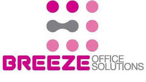

Trade Mark Journal No.2025/049 5 December 2025
UK00004298112 20 November 2025 (9,16,20,35,42,43)

- Class 9
- Office software; Office and business applications; Office suites [software].
- Class 16
- Office stationery; Office staplers; Office machines; Office binders; Binders for the office; Office requisites; Office perforators; Seals for the office; Office seals; Glues for the office; Office glues; Glue for the office; Stationery (Cabinets for -) [office requisites]; Cabinets for stationery [office requisites]; Office paper stationery; Protractors [for stationery and office use]; Staplers [office requisites]; Files [office requisites]; Desktop cabinets for stationery [office requisites]; Staplers for office use; Machines for office use in addressing mail; Staplers [office machines]; Binders (office supplies); Binders [office supplies]; Punches [office requisites]; Pens [office requisites]; Machines for office use for stamping mail; Finger-stalls [office requisites]; Binders for office use; Fingerstalls being office requisites; Office lettering machines; Office labeling machines; File sorters [office requisites]; CD shredders for home or office use; Staplers for offices; Machines for office use for sorting documents; Fingerstalls for office use; Imprinters for office use; Collators for office use; Moisteners [office requisites]; Office requisites, except furniture; Staples [office requisites]; Paper racks [office requisites]; Badge holders [office requisites]; Office labelling machines; Paper creasers [office requisites]; Office paper drill machines; Franking machines for office use; Magnetic boards being office requisites; Office perforating machines; Letter inserter machines for office use; Paper shredders for office use; Handheld label printers [office requisites]; Machines for office use for folding documents; Document laminators for office use; Laminators (Document -) for office use; Glues for office use; Hole punches [office requisites]; Name badge holders [office requisites]; Paper embossers [office requisites]; Cutters (Paper -) [office requisites]; Paper cutters [office requisites]; Name badges [office requisites]; Staplers (Electric -), for office use; Envelopes for stationery use; Adhesives for stationery; Stationery and educational supplies; Marking pens [stationery]; Label printing machines for household and stationery use; Pins [stationery].
- Class 20
- Office desks; Office furniture; Furniture (Office -); Office shelving; Office chairs; Office seats; Office tables; Office armchairs; Office requisites [furniture]; Chairs being office furniture; Furniture for offices; Free standing office partitions; Metal office furniture; Furniture for house, office and garden.
- Class 35
- Office functions; Rental of office machines; Leasing of office machines; Hire of office machinery; Rental of office equipment; Computerised office management; Hire of office equipment; Office machine rental services; Office functions services; Providing office functions; Rental of office equipment in co-working facilities; Office machines and equipment rental; Rental of office machines and equipment; Rental of office machinery and equipment; Recruiting of office support staff.
- Class 42
- Design of office space; Office furniture design; Design of office automation equipment; Design of layouts for office furniture.
- Class 43
- Leasing of office furniture.
BREEZE OFFICE SOLUTIONS LTD